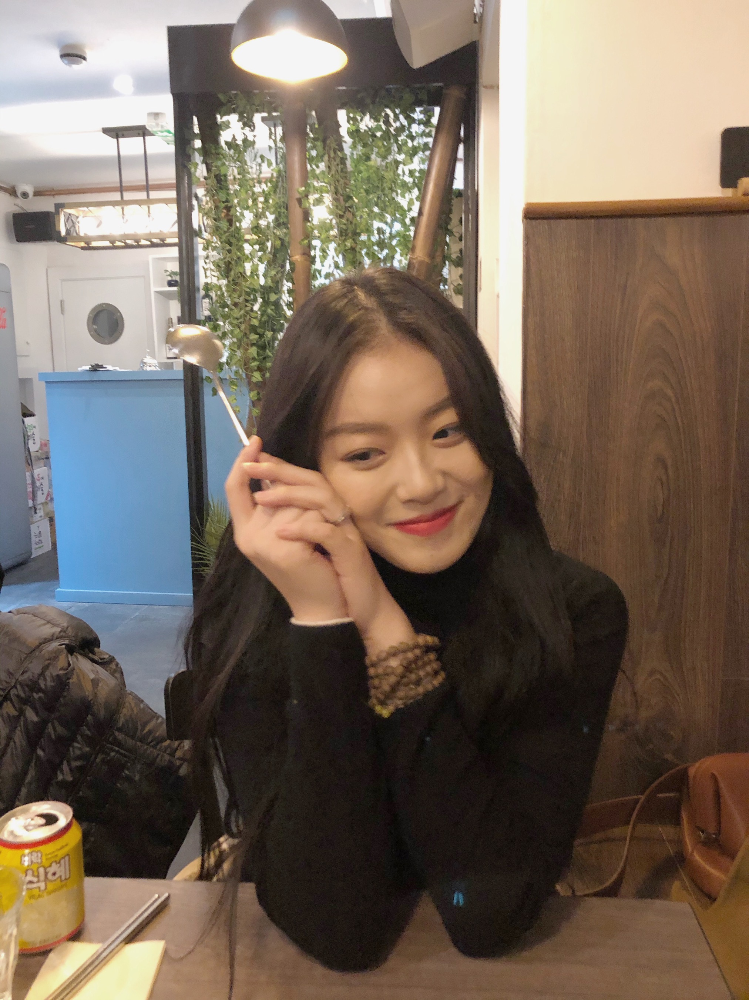

Welcome to my site
Hi, This is Lyn!😊

Discover Me
ABOUT ME

As a student in King's College London,I am full of confidence and ambitions in seeking knowledge, obtaining new skills and exploring self-worth. Mathematics with Management and Finance is my major,but I am learning psychology and web development as well.
To Explore Me More...

My Education
King’s College London (London, UK) Sep 2017 – Present
Mathematics with Management and Finance(Hons)
Relevant modules: Communication Skill, Accounting, Marketing, Economics, Maths
Optional Module: Digital Web Development, King’s Business School
Self-Learning Online Program
Introduction of Psychology (Yale University)
Clinic Psychology (Zhejiang University)
Human behavior and Economics (Peking University)
Medical cosmetology (Shandong University)
King’s College London (London, UK) Sep 2016 – Jun 2017
Modules: Business management, Academic English, Mathematics (96%)
My Experiences
Zhuofan Education, English Tutor (Anhui,China) Summer 2019
English Tutor
>
Provided English tutorial to students between 12-15 years old, arranged personal plan and recorded teaching progress daily.
>
Teaching Strategy shared and with colleagues concluded weekly, record existing problems (such as students did not follow tutor’s route, tutors have no passion to teach) and provide the best solutions.
>
Over 99% students’ English grades got improved in the school entrance exams.
BangBang Canteen (London, UK) February-April 2019
Waiter
>
As a part time job during tuition year, developed a strong ability balance work and study, marketing group project(A+).
>
Responsibility include taking orders and in charge of clients, serve food and beverage to guests.
>
Collaborated with colleagues in order to setting tables and polishing cutleries, kept restaurant clean and safe.
>
Developed communication skills through answering question and provided positive service skills to customers.
>
The restaurant obtained increasingly good reviews and many customers will come again.
My Skills
- Languages: English,Mandarian
- Office:Excel,Word,Powerpoint